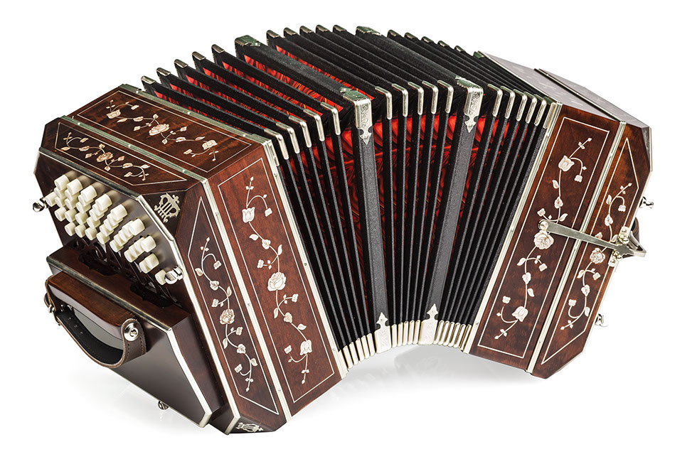

Když se Piazzollova rodina přestěhovala do New Yorku, dostal se do kulturně velmi pestré společnosti. Slyšel jazz, klasickou hudbu i pouliční swing, což mu poskytlo široký hudební základ. Newyorské prostředí bylo pro mladého Piazzollu inspirativní a podnítilo jeho kreativitu. Začal objevovat nové harmonické a rytmické struktury, které později přenesl do tanga. Město mu umožnilo setkat se s hudbou, která v Argentině nebyla běžná.
Bandoneon se stal jeho hlavním nástrojem, ačkoliv se tehdy zdál neobvyklý mezi americkými hudebníky. Piazzolla se však nevzdal a pokračoval v jeho studiu. V New Yorku absolvoval také první formální hudební vzdělání. Díky tomu získal technickou preciznost a hudební disciplínu. Tato zkušenost byla klíčová pro jeho budoucí vývoj.
